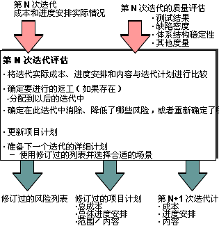

| 任务：评估迭代 |
 |
|
| 角色 | 主执行者: | 其他执行者: |
|---|---|---|
| 输入 | 必需: | 可选: |
| 输出 | ||
| 流程使用情况 | ||
与瀑布法相比，迭代法的一个突出优点是，迭代为评估进展与限制风险提供了天然的里程碑。在迭代中，必须继续评估进度和风险（如果非正式），以确保困难不会使项目偏离正轨。  |
|
收集度量值
评估迭代的结果
考虑外部变更
检查评估条件
拟订变更请求
|

| 指南 |
|---|
© Copyright IBM Corp. 1987, 2006. All Rights Reserved. |
用途
关系
主要描述
步骤
更多信息
|
|||||||||||||||||||||||||||||||||